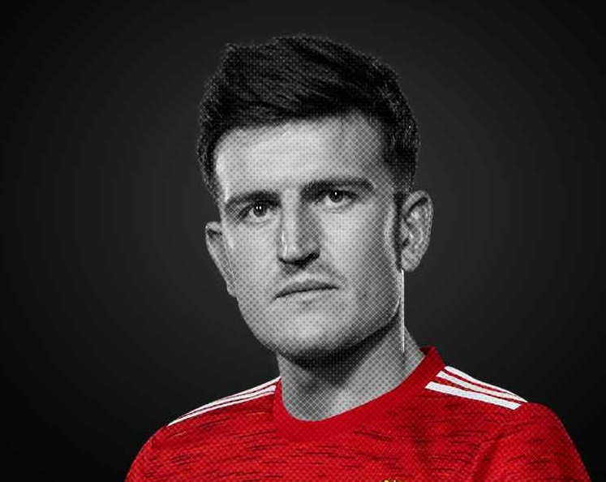
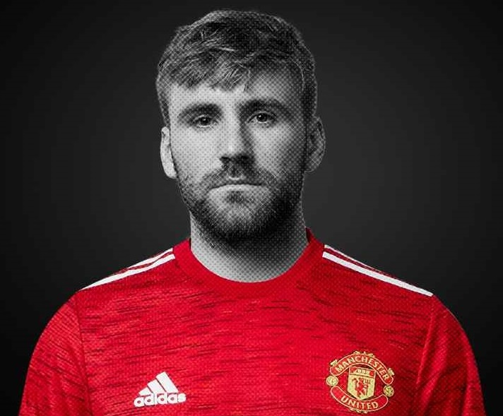
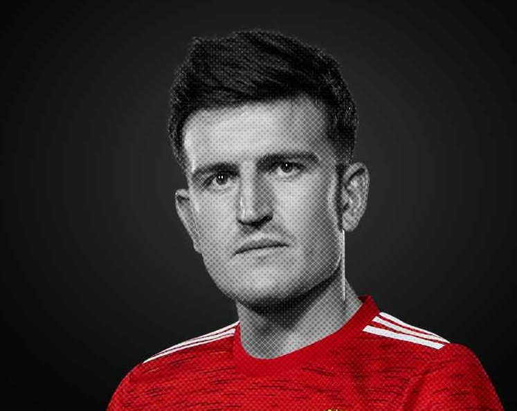
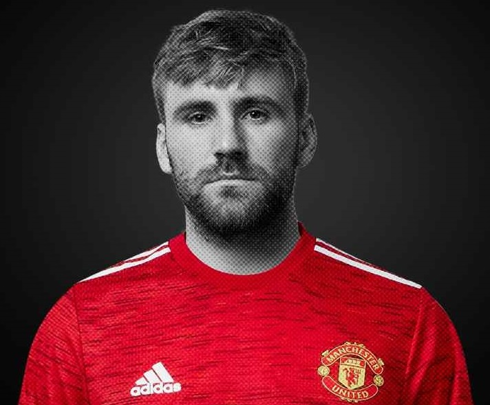
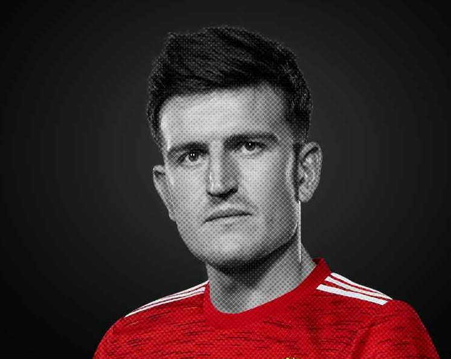
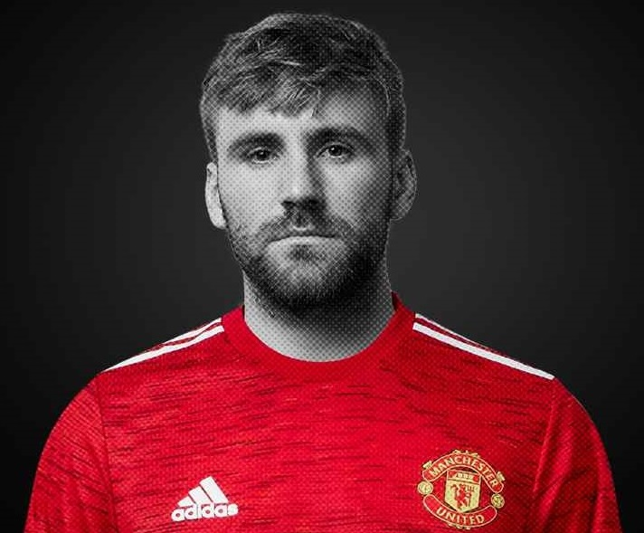
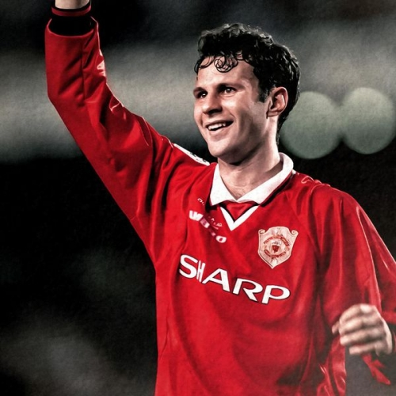
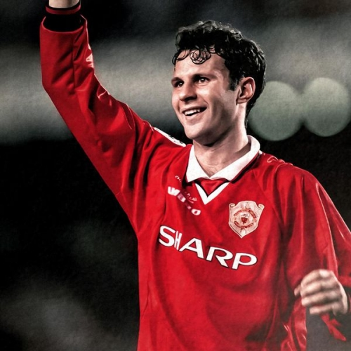

Câu lạc bộ bóng đá Manchester United (tiếng Anh: Manchester United Football Club, hay ngắn gọn là MU hay Man Utd) là một câu lạc bộ bóng đá chuyên nghiệp có trụ sở tại Old Trafford, Đại Manchester, Anh. Câu lạc bộ đang chơi tại Giải bóng đá Ngoại hạng Anh, giải đấu hàng đầu trong hệ thống bóng đá Anh. Manchester United là một trong những câu lạc bộ thành công nhất tại Anh, giữ kỷ lục 20 lần vô địch bóng đá Anh, đoạt 12 Cúp FA, 5 Cúp Liên đoàn và giữ kỷ lục 21 lần đoạt Siêu cúp Anh. Learn more


Ole Gunnar Solskjær (sinh ngày 26 tháng 2 năm 1973 tại Kristiansund, Møre og Romsdal) là một huấn luyện viên bóng đá người Na Uy và là cựu cầu thủ bóng đá đã dành phần lớn sự nghiệp của mình cho CLB Manchester United. Hiện tại, ông là huấn luyện viên của Manchester United. Solskjær đã ra sân 366 lần trong màu áo Manchester United và ghi được 126 bàn thắng. Solskjær đã xuất hiện từ băng ghế dự bị trong trận chung kết UEFA Champions League 1999, khi ông ghi được một bàn thắng vào phút bù giờ cuối cùng với CLB Bayern Munich, hoàn tất một cuộc lội ngược dòng tuyệt vời và giúp United giành cú ăn ba lịch sử. Khi còn thi đấu tại Manchester United, Ole được mệnh danh là một "Siêu dự bị" bởi ông đã ghi nhiều bàn thắng quan trọng khi vào sân từ băng ghế dự bị. Learn more

 
